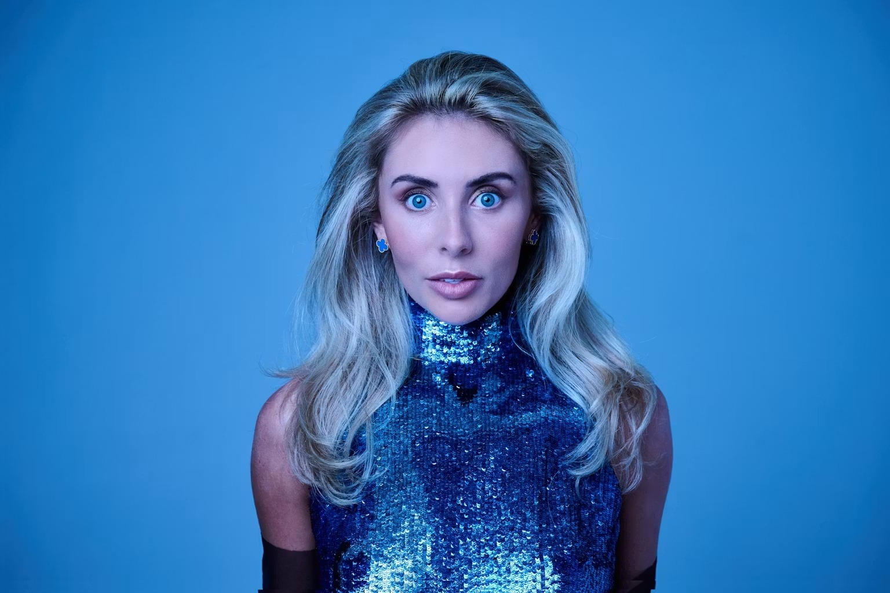

About Bonnie Blue
The blueprint behind Blue Standard.
Bonnie Blue has become one of the most talked-about creators in the world by understanding attention, controversy, press and monetisation better than most people understand a social media caption.

From online creator to global talking point.
Blue Standard is built around a simple idea: creators should learn from people who have actually done it. Bonnie Blue has not just grown an audience, she has turned that audience into a business, a brand and a constant stream of headlines.
Her success has never been about posting and hoping. It has come from understanding what makes people react, what makes journalists pick up a story, what makes audiences share content and what makes fans spend. That instinct is the foundation of Blue Standard.
Bonnie has shown how a creator can move beyond a single platform and become a name that travels through newspapers, podcasts, social media, television debates and online conversation. She understands that attention is not the end goal. Attention is the raw material. The real work is turning that attention into income, loyalty, leverage and commercial opportunity.
For many creators, the problem is not a lack of talent or even a lack of followers. The problem is that the machine around them is weak. Their messaging is unclear. Their press angles are underdeveloped. Their offers are not sharp enough. Their story is not being told in a way that makes people care. Blue Standard exists to fix that.
Bonnie brings a creator-first perspective to marketing. She knows what it is like to be judged, watched, misunderstood and underestimated. She also knows how to take that noise and turn it into momentum. That makes Blue Standard different from a traditional marketing agency. It is not theory from people standing on the sidelines. It is practical strategy from someone who has been at the centre of the storm and made it pay.
The company works with creators who want more than likes. It is for personalities who want to become businesses, for online names who want mainstream visibility, and for people who are ready to take their earning potential seriously.
Ready to make your online presence pay harder?
Tell us who you are, where your audience lives, and what you want to build next.